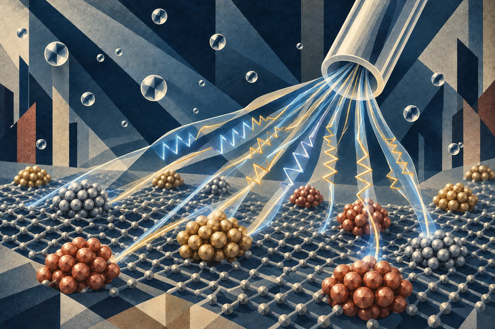

Operando Interfaces and Reaction Selectivity
We combine electrochemical measurements with operando Raman and UV–vis spectroscopy, differential electrochemical mass spectrometry (DEMS), and electrochemical atomic force microscopy (EC-AFM) to examine changing interfaces. Correlating surface observations with gaseous and dissolved products helps connect electrode chemistry to reaction pathways.
Our ammonia-oxidation studies on NiOOH and RuO₂ examine how potential, electrolyte composition, and competing oxygen chemistry change product selectivity. Collaborative work on nickel phosphides follows the catalyst state during hydrogen evolution, distinguishing the working surface from changes that occur after the potential is removed.
Operando spectroscopyDEMSEC-AFM
Core Questions
- How do ammonia, hydroxide, and oxygen chemistry redirect reaction pathways?
- Which surface states persist or change while the reaction is running?
- How can complementary measurements distinguish relevant intermediates from spectator signals and probe effects?
Selected Recent Papers
- Selective Ammonia Electrooxidation on RuO2: Competitive and Synergistic Interplay between Ammonia and HydroxideThe Journal of Physical Chemistry C, 2025, 129, 12351-12361
- Correlative In Situ Analysis of the Role of Oxygen on Ammonia Electrooxidation Selectivity on NiOOH SurfacesJournal of Catalysis, 2024, 438, 115720
- Spatiotemporal Visualisation of Electrocatalyst/Electrolyte Interfaces with Electrochemical Atomic Force Microscopy: Applications and NotesJournal of Microscopy, 2026, 302 (1), 5-16
- Probing Terra Incognita of Ni–P Catalysts: Operando Explorations during Hydrogen Evolution ReactionJournal of the American Chemical Society, 2026, 148, 9, 10241–10256